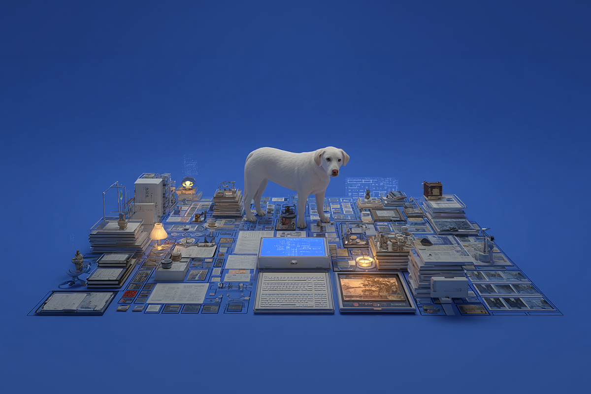
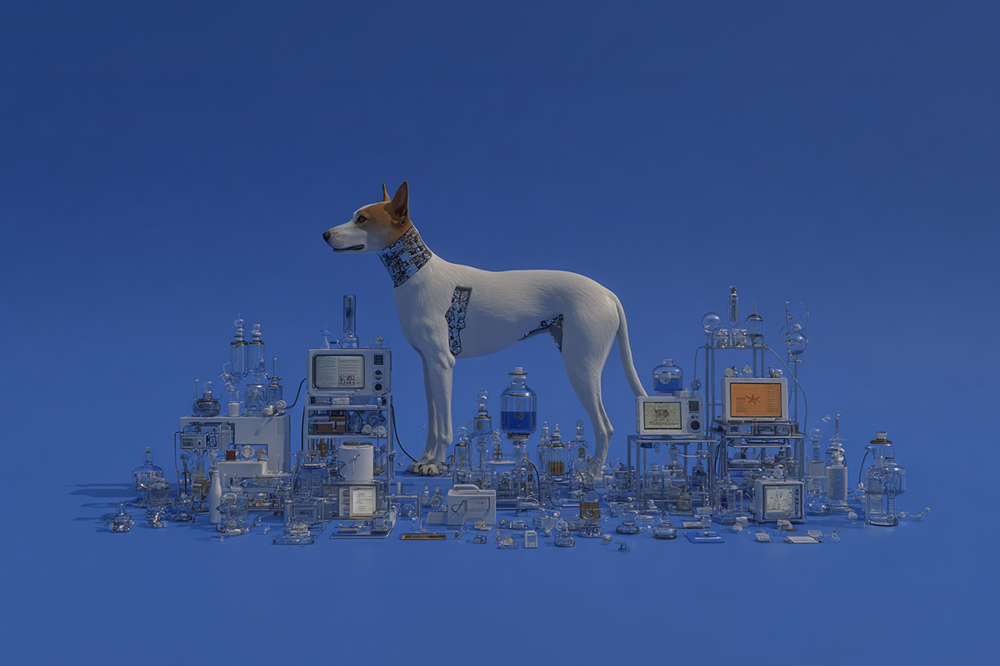

Tecnología con propósito
Salvó a su perrita con 0 pesos y ayuda de la IA
Salvó a su perrita con 0 pesos y ayuda de la IA

Estamos tan acostumbrados a ver la inteligencia artificial hacer cosas random (dibujar imágenes raras, responder preguntas existenciales, etc.) que cuando aparece una historia donde realmente cambia algo importante, cuesta procesarlo.
Un emprendedor tech australiano usó ChatGPT para ayudar a desarrollar una vacuna personalizada contra el cáncer de su perrita, una Staffy de 8 años. Junto a científicos e investigadores, logró que el tumor retrocediera casi un 75%. Y así fue como su perrhija, que estaba apagándose, terminó volviendo a correr y hasta saltando la reja de su casa para perseguir conejitos.
No es una peli. Pasó de verdad. 100% real, no fake.

Lo más interesante de esta historia no es el “wow” tecnológico. Es entender qué hizo realmente la IA.
Porque ChatGPT no inventó ninguna cura ni entró al laboratorio como reemplazo de un médico o científico. Lo que hizo fue ordenar información médica compleja, conectar diferentes estudios, orientar las ideas y acortar un camino que de otra forma habría sido imposible o habría tomado años.
Funcionó como un puente entre el conocimiento disponible y alguien que sabía cómo usarlo. Y pensándolo bien… eso ya es bastante heavy.
Más de lo que parece. Porque muchos usamos la IA todos los días para cosas chicas: resumir PDFs eternos o redactar un correo mientras tomamos once. Y está perfecto, para eso también sirve.
Pero historias como esta recuerdan algo importante: el potencial real de la IA no está solo en hacer tareas rápidas. Está en cómo decidimos usarla cuando algo realmente importa.

En Chile todavía miramos muchas veces la inteligencia artificial como una curiosidad tech o una moda medio pasajera. Pero casos así muestran que puede transformarse en una herramienta potente cuando se combina con personas creativas, conocimiento y una razón poderosa detrás.
Porque al final, la tecnología ya existe. La diferencia está en qué hacemos con ella y quizás ahí está la conversación más interesante de todas.
 Tecnología
TecnologíaSi eres como yo y revisas TikTok e Instagram constantemente, te habrás dado cuenta de que estas redes son casi como un experimento social.
 Tecnología
TecnologíaHablamos mucho de inteligencia artificial. La tenemos integrada en nuestra vida, nos ayuda en nuestros trabajos y le preguntamos cosas de…
 Tecnología
TecnologíaDurante años hemos pensado en la inteligencia artificial como algo súper frío: servidores gigantes, computadores procesando datos y…